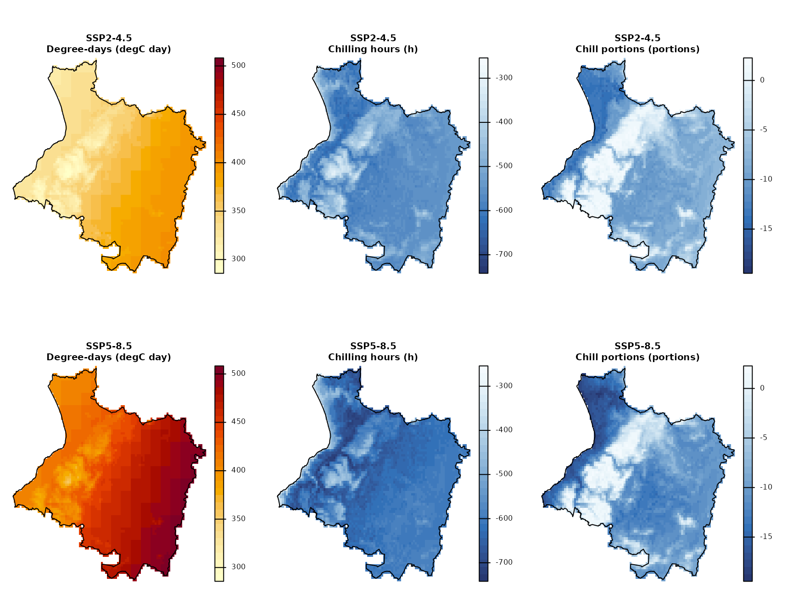

Projected change of thermal indices: WorldClim CMIP6
Source:vignettes/articles/climate-change.Rmd
climate-change.RmdHow much would degree-days and winter chill change by mid-century?
This page uses the WorldClim 2.1 downscaled CMIP6 projections, read with
worldclim_future_region(), for 14 global climate
models (GCMs), two scenarios (SSP2-4.5 and SSP5-8.5) and the
period 2041-2060, against the WorldClim 1970-2000
baseline.
Read these numbers as changes, not as future values. The validation with observed stations (CEAZA-Met article) showed that WorldClim and monthly climatologies have large errors for chill, so this page reports the change between the future and the baseline of the same data, where much of that error cancels. It also reports the spread between models: a single GCM can be far from the consensus.
Scripts: data-raw/climate-change/. Heat season 1
September - 30 April; chill season 1 May - 31 August.
Province of Cauquenes (Maule)
Indices computed with thermify_rast() from the monthly
WorldClim surfaces (degree-days with the averaging method; chill with
the Linvill hourly reconstruction,
ch_methods = "hourly").
| Scenario | Index | Baseline | Median change | Range of 14 GCMs |
|---|---|---|---|---|
| SSP2-4.5 | Degree-days (base 10 degC) | 1247 degC day | +361 (+29 %) | +249 to +579 |
| SSP2-4.5 | Chilling hours (0-7.2 degC) | 1117 h | -542 (-49 %) | -828 to -310 |
| SSP2-4.5 | Utah chill units | 2087 units | -388 (-19 %) | -636 to -215 |
| SSP2-4.5 | Chill portions (Dynamic) | 93 portions | -7 (-8 %) | -14 to -3 |
| SSP5-8.5 | Degree-days (base 10 degC) | 1247 degC day | +450 (+36 %) | +334 to +726 |
| SSP5-8.5 | Chilling hours (0-7.2 degC) | 1117 h | -609 (-54 %) | -984 to -432 |
| SSP5-8.5 | Utah chill units | 2087 units | -474 (-23 %) | -908 to -322 |
| SSP5-8.5 | Chill portions (Dynamic) | 93 portions | -9 (-10 %) | -24 to -6 |

Median change across the 14 GCMs, 2041-2060. For degree-days, chilling hours and Utah units all 14 models agree on the sign of the change in every cell. For chill portions they do not everywhere: in the coldest fifth of the province (winter mean temperature of about 6-8 degrees C) the median change is close to zero, sometimes slightly positive, and the models split; in the rest every model projects a loss, larger where winters are milder. This is expected from the Dynamic model, in which chill accumulates most efficiently at moderate temperatures: a cold site can lose little chill, or even gain some, from a moderate warming.
The choice of chill model changes the conclusion
Under the same warming, chilling hours fall by about half, but chill portions fall by less than a tenth. Chilling hours count every hour between 0 and 7.2 degrees C and ignore that slightly warmer hours still contribute to chill accumulation; the Dynamic model, which describes chill accumulation and its reversal by heat, responds much less to a moderate warming. Studies that report future chill only as chilling hours therefore tend to overstate the loss (Luedeling et al. 2011). For planning, prefer chill portions, and report chilling hours only for comparison with older literature.
CEAZA-Met stations (north-central Chile): delta method
At 29 of the 30 stations of the validation, each model’s monthly change at the station’s WorldClim cell (future minus 1970-2000) is applied to every hour of the station’s observed record: the shift goes from the change of the minimum at the daily minimum to the change of the maximum at the daily maximum. The indices are then computed from the modified hourly series, season by season, exactly as the reference of the validation. This keeps the observed day-to-day and year-to-year variability, and the present-day baseline is the observed index. Punta de Choros is excluded: the station is on the shoreline and its WorldClim cell is sea (no data), so there is no model change to apply.
A simpler variant, adding the change to the station’s monthly climatology, is not used: monthly climatologies lose the cold nights, give zero chill portions at several interior stations that actually accumulate 27-31 portions per season, and make marginal sites lose all their chill under any warming.

Each point is a station and scenario (median of the 14 GCMs).
| Scenario | Index | Median over stations | Stations losing all chill |
|---|---|---|---|
| SSP2-4.5 | Degree-days (base 10 degC) | +26 % | - |
| SSP2-4.5 | Chilling hours (0-7.2 degC) | -54 % | 2 |
| SSP2-4.5 | Utah chill units | -70 % | 7 |
| SSP2-4.5 | Chill portions (Dynamic) | -37 % | 0 |
| SSP5-8.5 | Degree-days (base 10 degC) | +32 % | - |
| SSP5-8.5 | Chilling hours (0-7.2 degC) | -60 % | 3 |
| SSP5-8.5 | Utah chill units | -81 % | 9 |
| SSP5-8.5 | Chill portions (Dynamic) | -42 % | 0 |
With a similar warming at the stations (about +1.9 degrees C under SSP2-4.5), the semi-arid north loses a much larger share of its chill than Cauquenes: the median station loses about a third of its chill portions (37 % under SSP2-4.5, 42 % under SSP5-8.5), against less than a tenth in Cauquenes. The losses are largest on the coast (about two thirds at Caleta El Toro, La Serena and Coquimbo, below 130 m) and smallest at the highest station (about 10 % at Los Molles, 2,543 m). No station loses all its chill portions. Chilling hours, which already fall by about half at the median station, disappear at the coastal stations whose baseline is only 2-13 hours per season (two stations under SSP2-4.5, three under SSP5-8.5). Utah units can be negative because the Utah model subtracts chill for warm hours, so their relative changes are unstable near zero and exceed -100 % at some stations; use them with care in mild climates.
Limitations
- Changes, not forecasts. WorldClim future surfaces add each model’s change to the 1970-2000 baseline; the results describe a climate centred on 2041-2060, not any particular year.
- Monthly data in Cauquenes. The province maps are computed from monthly climatologies, which lose day-to-day variability and bias absolute chill values (about -25 % for chilling hours in the validation); changes are less affected but not immune. The station analysis avoids this by using the observed hourly records, but assumes that day-to-day and diurnal variability stay as they are.
- Model spread. The table shows the range of 14 GCMs; some (for example CanESM5 and UKESM1-0-LL) warm more than most models. The median is the summary to use.
- Baseline period. The baseline is 1970-2000; part of the projected change has already happened.
- Validation. Chill estimates have been validated only in semi-arid north-central Chile; the central-south is pending.
References
Luedeling, E., Girvetz, E. H., Semenov, M. A., & Brown, P. H. (2011). Climate change affects winter chill for temperate fruit and nut trees. PLoS ONE, 6(5), e20155. https://doi.org/10.1371/journal.pone.0020155
Fick, S. E., & Hijmans, R. J. (2017). WorldClim 2: new 1-km spatial resolution climate surfaces for global land areas. International Journal of Climatology, 37(12), 4302-4315. https://doi.org/10.1002/joc.5086